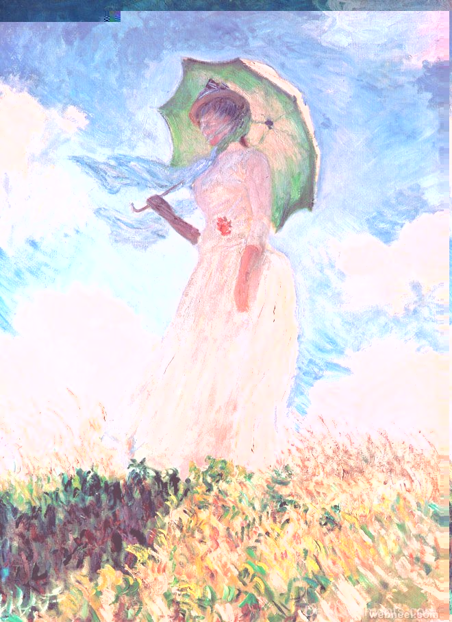

For this project, I wanted to see how these different programs would affect these masterwork pieces by Claude Monet, who is most well-known form is oil impressionist paintings. Oil painting was the first medium that I ever fell in love with, so seeing it being distorted using audio programs was an exciting experience.
